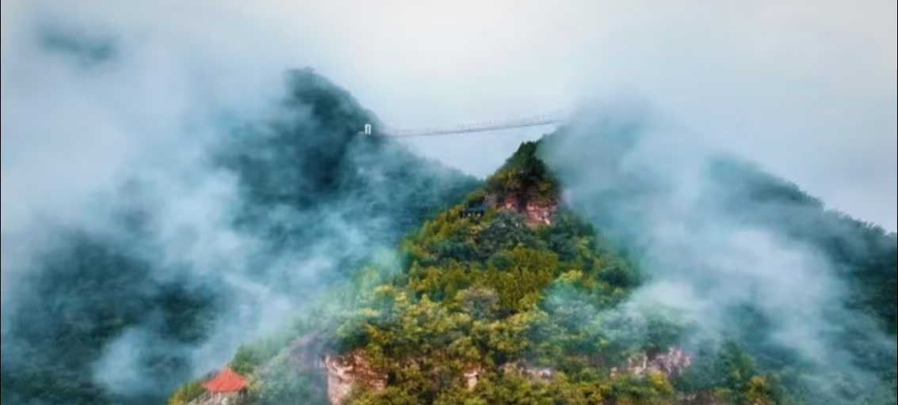
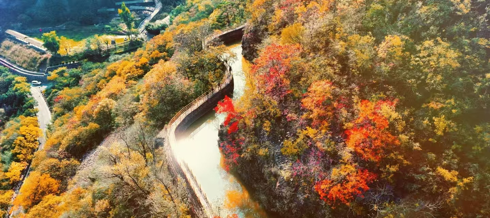

红旗渠·太行山大峡谷景区位于河南省安阳市林州市，地处太行山腹地，是国家5A级旅游景区、全国红色旅游经典景区。景区将红色红旗渠精神与太行雄奇山水融为一体，既有震撼的人工水利奇迹，又有峡谷、断崖、溪流、森林等自然景观。
红旗渠被称为“人工天河”，是上世纪林县人民艰苦奋斗修建的水利工程；太行大峡谷山势雄伟，峡谷幽深，空气清新，四季景色分明，适合红色研学、山水观光、休闲避暑与短途旅行。

📍 地址：河南省安阳市林州市太行山红旗渠风景区
🎫 门票：红旗渠单独门票、太行大峡谷联票可选；学生、60岁以上老人凭证半价，儿童、高龄老人、军人持证免票
⏰ 开放时间
旺季 08:00–18:00，淡季 08:30–17:30，全天游览充足
🚗 交通指南
🍜 当地特色美食
红色一日游：景区入口→红旗渠纪念馆→分水苑→青年洞→绝壁栈道→返程。
山水两日游：Day1 红旗渠红色景点研学参观；Day2 太行大峡谷→桃花谷→王相岩，沉浸式欣赏太行山水。
1. 红色景区文明参观，尊重历史，不乱涂乱画，保持园区整洁。
2. 山区步道、台阶较多，务必穿着舒适防滑运动鞋。
3. 太行山区昼夜温差大，出行常备薄外套，做好防晒保暖。
4. 峡谷部分路段较陡峭，老人小孩游玩需专人陪同。
5. 节假日游客量大，建议提前线上预约购票，错峰出行。
6. 合理规划路线，搭配观光车，避免长时间徒步劳累。
春季山花盛开，太行青山翠绿，适合踏青研学；夏季峡谷清凉，避暑玩水十分舒适；秋季红叶满山，层林尽染，风景绝美适合拍照；冬季银装素裹，绝壁冰挂独特，人少安静。